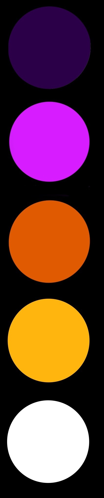

Webpages . Wireframes . Color Schemes. Details.
Project PrivaC
Individual Project for WiCHacks 2019
☆ Award:
JPMorgan Chase - Best Hack for Social Good
Description:
An informative site to help victims of cyber-crimes (such as connecting to emergency contacts, definitions, applicable laws, etc).
It intends to have a chatbot interface to ease the process of finding information available on the site without having to search through pages, and a possible multi-client chat server
connection to a Response Team member of PrivaC to personally help out the victim/client.
Initial Design Goals:
• Needs to have a layout that most users are familiar with
• Needs to be more multi-media heavy for users with minimal access to education (they're the easiest targets of cybercrimes, so they need more help)
• Cannot be visually overwhelming, should not present too much info all at once
• Needs more guided constraints for users to find appropriate and relevant info more efficiently
• Needs to have different colored themes for accessibility
Drawbacks of Utilized Design Principles
• Will need an accessible and standard Bangla version
• Pinkish tones might make the site seem as though the project only caters to female victims

DISCO! - Discourse, Data, Dialogue
Team Project at RIT BrickHack 6 (2020)
☆ Award: Datto - Data Mining for Community Impact
Team Members:
Joshua Kelly
[ back-end / site hosting ]
MD Rafiul Karim
[ database / project management ]
Nuzhat Minhaz
[ design / front-end dev]
Description:
An informative news-aggregating website that fosters opinions through monologue and optional discussion or discourse. It intends to protect one's identity, and provides availability of data based on location.
Design Goals:
• Icons must be used to build a pattern of distinction
• Avoiding commonly used concept of "red for disagree and green for agree" to promote more views rather than assigning perceived
good/bad opinions, by utilizing unique and bright colors to further engage the user.
Drawbacks of Utilized Design Principles
• Colors go against user expectation;
• May be too bright for negative topics;
• Not accessible design;
• Does not contain location feature yet;


RIT Global Union Website
Description:
RIT Global Union is a Representative Student Organization on campus that aims to help international students with resources, connect with communities,
and allows for all students to learn from cultural diversity and inclusion.
Design Goals:
As this was part of my work as a Webmaster for RIT Global Union, I was given the following tasks to fulfill in terms of website functionality, look and feel:
• Emphasizing on presence of the organization by providing sufficient information (e.g location, what we do, who we are)
• Make it bright and vibrant to welcome international students from diverse cultures that celebrates in different colors
• Utilize info and photos from past events and current affiliates
• Make the site easy to explore, add a simple navigation
• Make content simple and engaging, and intend to use the stories and identities of international students
Drawbacks of Utilized Design Principles
• Animation on the left takes up too much attention; might be too heavy on the eyes; homepage needs more whitespace
• Needs interactive content (such as a map) to engage user